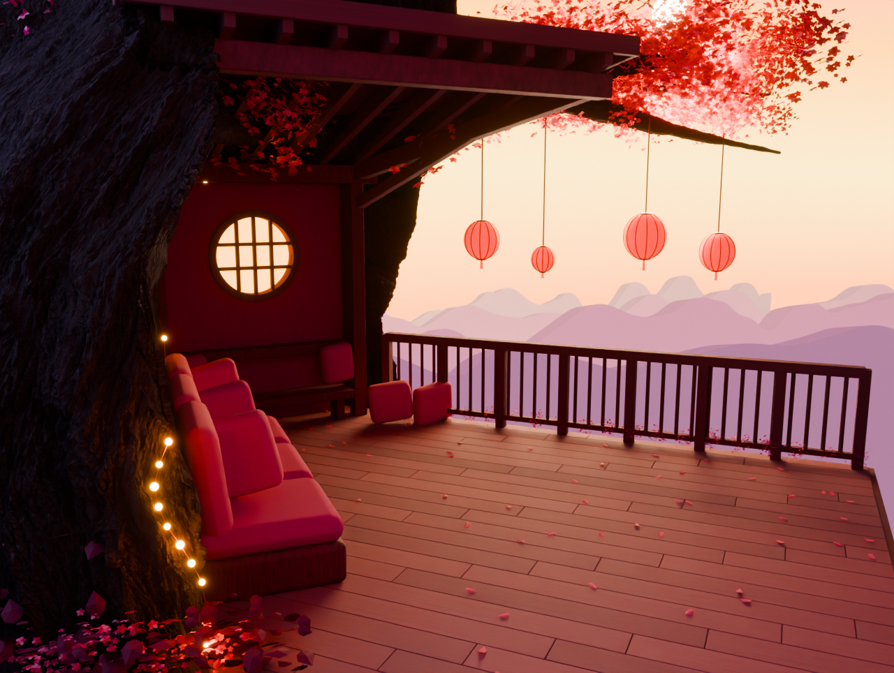
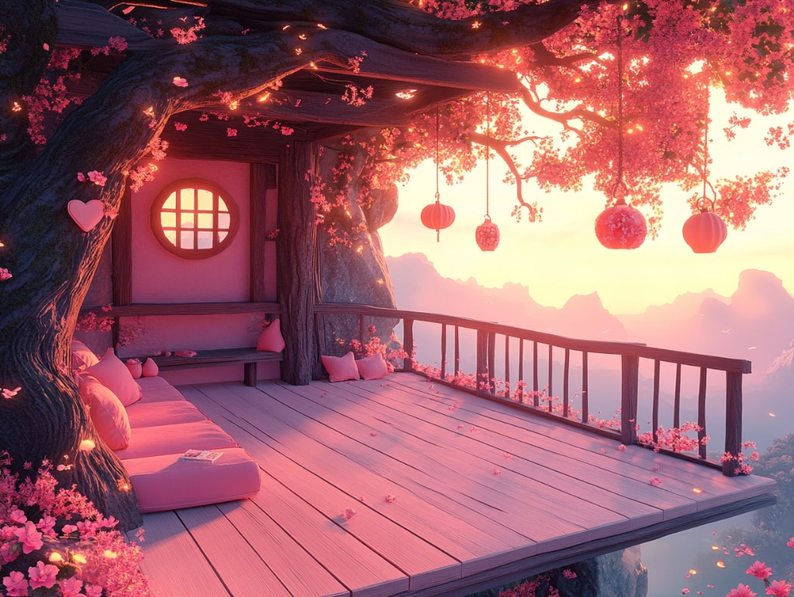

A roof that shelters the room.
A massive tree encloses the doorway and couch, with substantial limbs carrying the terrace. The new timber roof has an exposed planked underside and fitted framing. Reduced interior fill restores the contrast between the sheltered room and the bright mountain opening. Foliage remains a separate layer. The camera looks out from beside the foreground trunk toward the mountain opening.


Open Blender sceneCeiling close-upBark close-upScene notesEnclosure checksEarlier architecture sheet


The bark and sunset effects are now visible in Blender. Branch shapes, upholstery and distant landscape still need refinement. Lantern sway and drifting petals are set up in Blender; mobile export and iPad integration come later.
Earlier scene studies
B03 camera-depth check · B03 wireframe · A01 architecture · Earlier enclosure study